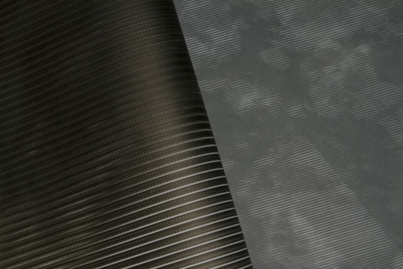
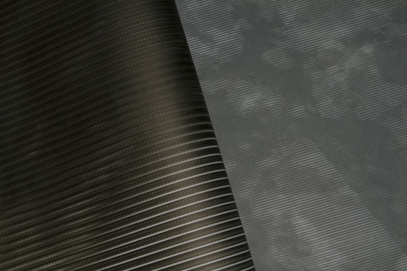
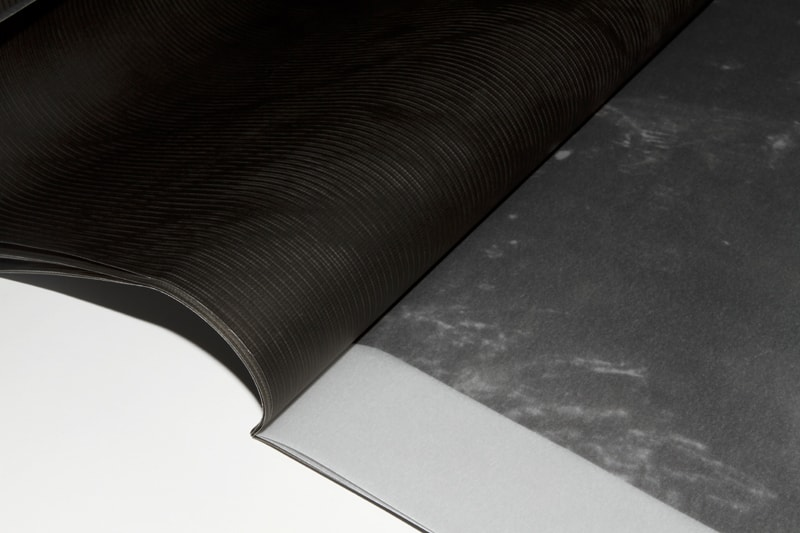
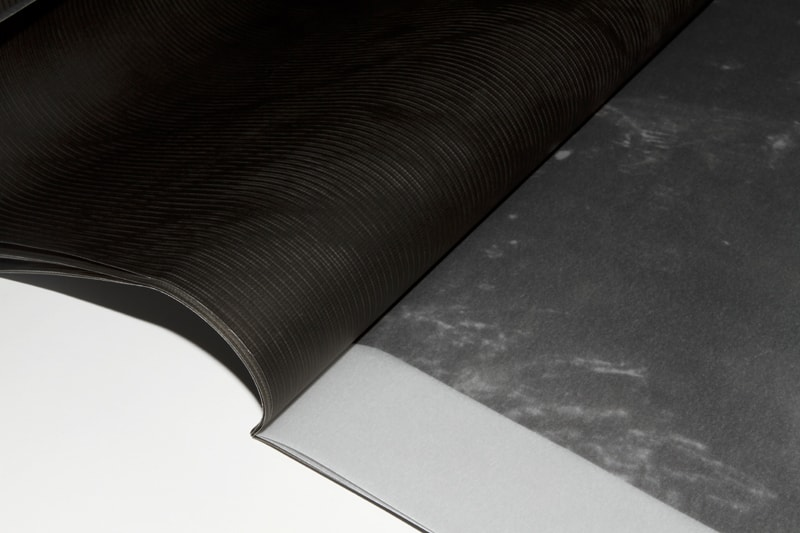
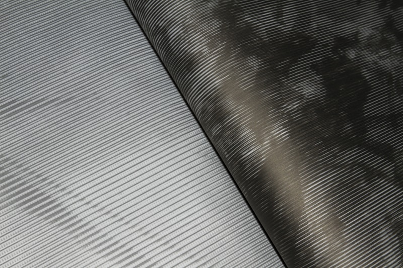
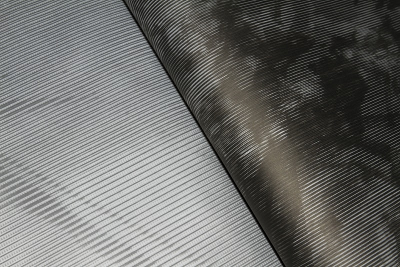
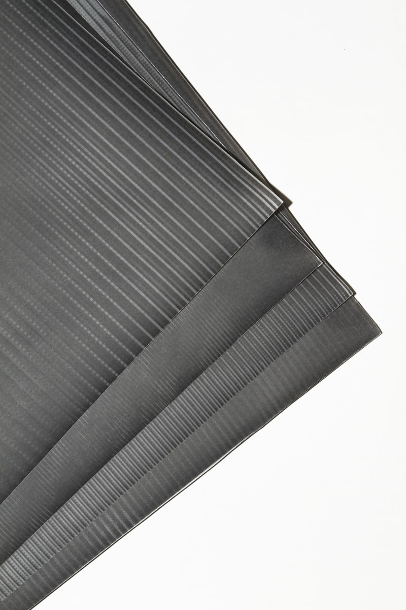
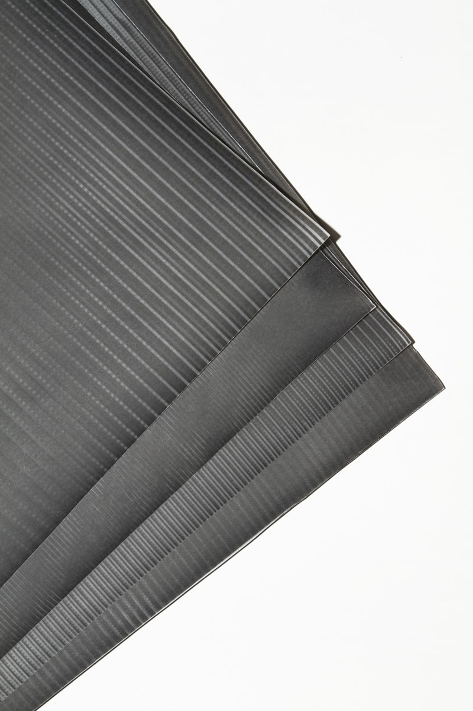
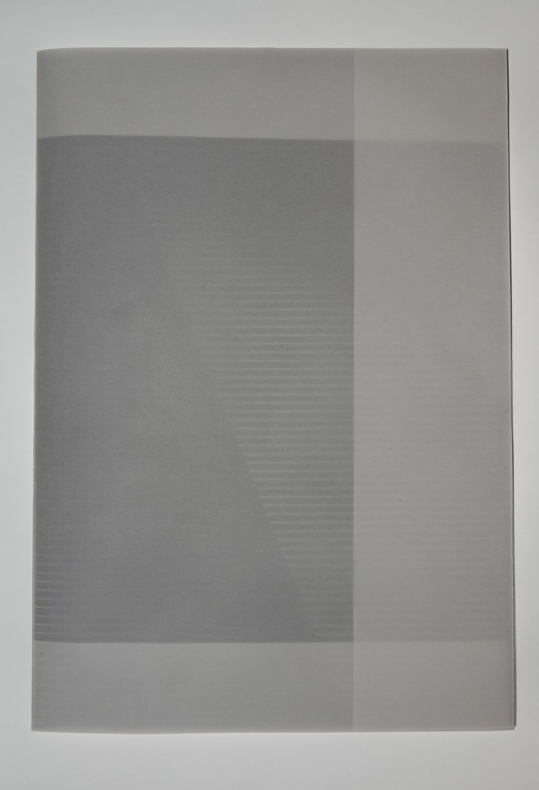
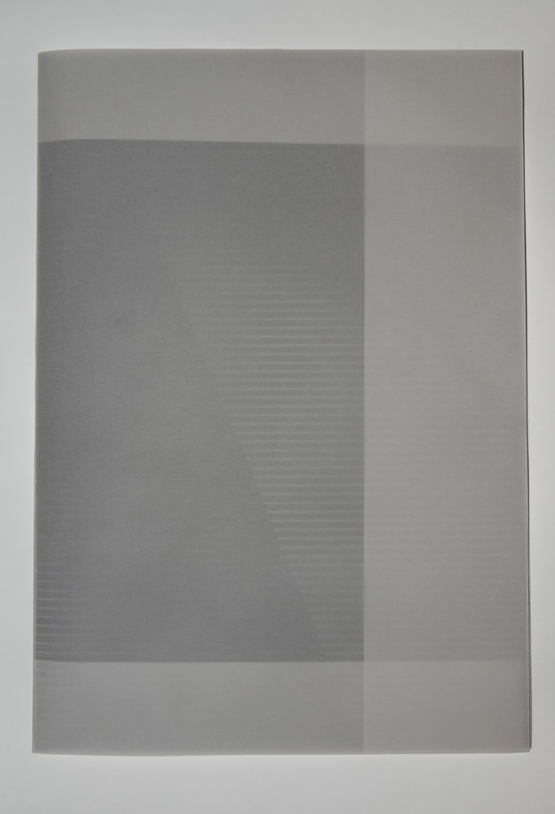

On the soft edge, Hors les Murs, La Nuit de l’nstant, Les Atleries de l’Image, Marseille, 2016

White Trash, Le Louise, Young International Artfair, Bruxelles, 2016

White Trash, 43 pages, édition limitée à 10 exemplaires, autopubliée, 2016

Fragments amoureux, Espace Michelet, Les Rencontres Internationales de la Jeune Photographie, Villa Pérochon, 2016
Des filles la mer et une grotte, Espace Michelet, Les Rencontres Internationales de la Jeune Photographie, Villa Pérochon, 2016
Des filles la mer et une grotte, Straar Galerie, La Photographie Marseille, 2015
On the soft edge, festival ManifestO, Toulouse, 2015
Le spectre des illuminés, collaboration avec Ken Sortais, Field Effects, Le CAP, Arles, 2015
J’ai bu le vin nouveau, Ville fantôme (Photo 122), La Galerie de la Rotonde, Paris, 2015
Cattuliacus, collaboration avec Ken Sortais, Seine Saint Denis Style, Atelier G8 - CIté des Arts, Paris, 2015
Rupture Interne, édition limitée à 1 exemplaire, autopubliée, 2014
 


 


 

 

 
